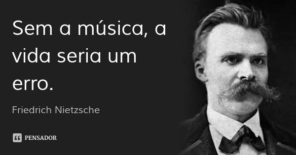

Hobbies e Interesses
Hobbies
Ler livros/ mangás 😀
Ouvir música
Jogar jogos diversos
Tocar violão
Pensar na vida
Querer saber como o mundo e suas coisas funcionam
Assistir conteúdos diversos
Ouvir podcasts de assuntos que me interessam
Interesses
- Astronomia
- A vastidão do espaço desconhecido e suas infinitas possibilidades
- Tecnologias em geral
- Como funcionam as tecnologias atuais, o conceito por trás de cada componente tecnológico
- Psicologia/ Psiquiatria
- Entender as diferentes nuances da psique humana
- Gastronomia
- Comer é bom, né!
- Filosofia
- Refletir sobre qual o sentido da vida, o que realmente é viver, como se libertar dos seus demônios interiores, etc
- Música
- Em resumo: 